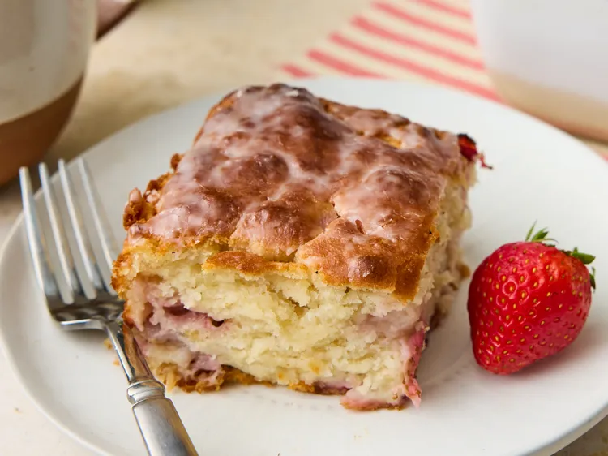

Return to home
Strawberry Butter Swim Biscuits

Description
These strawberry butter swim biscuits are perfectly balanced—tender and buttery, but also airy and moist with a subtle tang from buttermilk.
Studded with fresh strawberries and lightly sweet, they are just as tasty for dessert as for breakfast.
Ingredients
- 2 1/2 cups all-purpose flour
- 1 tablespoon baking powder
- 1 tablespoon white sugar
- 3/4 teaspoon kosher salt
- 1/2 teaspoon baking soda
- 2 cups whole buttermilk
- 8 tablespoons unsalted butter, melted, divided
- 3/4 cup chopped fresh strawberries, patted dry
- 1/2 cup confectioners sugar
- 1 tablespoon buttermilk
Directions
- Gather all ingredients.
Preheat the oven to 450 degrees F (235 degrees C).
- Whisk together flour, baking powder, sugar, salt, and baking soda in a large bowl; pour in 2 cups of the buttermilk and 3 tablespoons melted butter.
Stir until almost fully combined but some dry streaks remain, about 30 seconds.
- Gently fold in strawberries until evenly combined.
- Pour remaining 5 tablespoons melted butter into an 8-inch square baking dish; swirl the dish to evenly coat bottom and sides.
Transfer dough to the prepared baking dish and gently spread into an even layer; cut biscuits into 9 even squares.
- Bake in the preheated oven until biscuits are golden brown, 30 to 35 minutes.
Checking after 20 minutes and tent with foil if biscuits are browning too quickly.
- Remove from the oven and let rest in the pan on a wire rack for 5 minutes.
Meanwhile, whisk confectioner’s sugar and 1 tablespoon buttermilk together in a small bowl until combined. Drizzle evenly over warm biscuits, slice, and serve while warm.